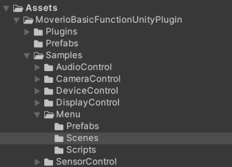

This guide will show you how to set up your development environment and try out the MoverioBasicFunctionUnityPlugin sample.

| configuration | value |
|---|---|
| Player Settings > Other Settings > Package Name |
Create a unique app ID using the Java package name format. For example, com.example.helloMoverio |
| Player Settings > Other Settings > Minimum API Level | Android 7.0 ‘Nougat’ (API level 24) or higher |
using MoverioControllerFunctionUnityPlugin; is described. cs using MoverioControllerFunctionUnityPlugin;
Set Player Settings > Other Settings > Minimum API Level to Android 9.0 ‘Nougat’ (API level 28) or higher.